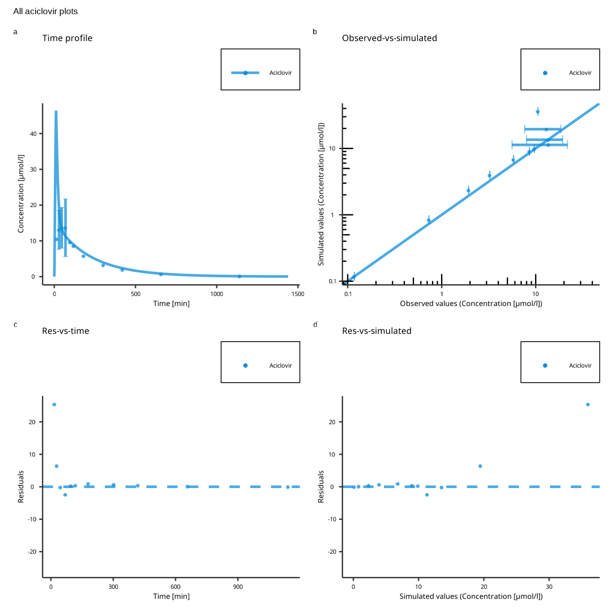

Plotting the simulation results is an integral part of model diagnostics and quality control. esqlabsR implements an Excel-based workflow for figure creation from simulated scenarios.
Plotting Workflow
The process relies on filling the
Plots.xlsx file in order to specify all
the figures that need to be created. Then, the function
createPlotsFromExcel() translates the information in the
Excel file into plots.
The general workflow is outlined in the figure below.
Simulation results and observed data are combined and assigned to
groups in DataCombined objects, see {ospsuite}-documentation.
The DataCombined objects are defined in the sheet
DataCombined, see the Specify Datacombined
section.
For each DataCombined, multiple plots of different types
can be defined using the plotConfiguration sheet. More
information in the Creating Single
Plots section.
The plots are combined into multi-panel figures (plot grids) in the
plotGrids sheet. The combined plots are returned as
ggplot2 objects by the function
createPlotsFromExcel(). More information in the Combining Single Plots section.
In addition to returning the plots as function output, plot grids can
be exported to png with specific settings using the
exportConfiguration sheet. More information in the Export Plots section.
Specify DataCombined
A DataCombined object stores the data to be plotted. It
can contain simulated results and/or observed data and groups them
together.
First, the user needs to define the name of the
DataCombined in the column DataCombinedName.
For each data set (simulated or observed), a separate row must be
created. Each added data set must have a label unique for
this DataCombined. The label will be used in figure legends
if the data set does not belong to any group. A data set can be assigned
to a group. All data sets that belong to the same group
will be plotted in the same color and have a common legend entry, with
the group name as the legend label.
The added data can be transformed by defining an
offset or a scaleFactor for the two axes. For
more details, see the Transformations
section of the {ospstute-r} documentation.
To add a simulation output to the object, the user
must create a row with dataType set to
simulated, define the scenario that was used
to generate the results (see Desing Scenarios), and specify
the model output path. Multiple simulated outputs can be
added to a single DataCombined, and they even can come from
different scenarios. Currently, only outputs of equal dimensions can be
combined.
To add observed data, the user must create a row
with dataType set to observed and specify the
name of the dataSet. See Observed
Data for how to read data as DataSet objects.
Creating Single Plots
A single DataCombined object can be used to create
multiple single-panel plots of different types. To do so, an entry in
the sheet plotConfiguration must be created with the
following content (all values are optional, if not stated
otherwise):
plotID: Unique name of the plot. This ID will be used to combine multiple plots to multi-panel plots in the sheet plotGrids. Mandatory.
DataCombinedName: Name of the
DataCombinedobject defined in the sheet DataCombined that will be used to create the plot. Mandatory.plotType: type of the plot, one of
individual,population,observedVsSimulated,residualsVsSimulated, andresidualsVsTime. See Visualizations with `DataCombined` for details on different plot types. Mandatory.title: Title of the plot.
xUnit, yUnit: Units of the x- and y-axis, respectively.
xAxisScale, yAxisScale: Scaling of the axes,
linfor linear scaling orlogfor logarithmic.xValuesLimits, yValuesLimits: Limits of x- and y-axis, respectively, in xUnit and yUnit.
aggregation: If plotType is
population, this column defines the type of aggregation used for simulated results. Default isquantiles, supported values are
ospsuite::DataAggregationMethods
#> $quantiles
#> [1] "quantiles"
#>
#> $arithmetic
#> [1] "arithmetic"
#>
#> $geometric
#> [1] "geometric"quantiles: If plotType is
populationand aggregation isquantiles, a list of three numeric values defining which percentiles to draw. Default is0.05, 0.5, 0.95, in which case the drawn line represents the median (50th percentile), the lower range is the 5%, and the upper range is the 95%.foldDistance: If plotType is
observedVsSimulated, a vector for plotting lines at required fold distances. The vector can include only fold distance values>1. Anx-fold distance is defined as all simulated values within the range betweenx-fold (depicted by the upper fold range line) and1/x-fold (depicted by the lower fold range line) of observed values. The identity line can be interpreted as the1-fold range.
In addition to the pre-defined columns, the user can add any property of a Plot configuration as a separate column. Here is a sample of the available plot settings:
#> [1] "foldLinesLegendDiagonal" "foldLinesLegend"
#> [3] "lloqDirection" "displayLLOQ"
#> [5] "errorbarsAlpha" "errorbarsLinetype"
#> [7] "errorbarsCapSize" "errorbarsSize"
#> [9] "ribbonsAlpha" "ribbonsLinetype"
#> [11] "ribbonsSize" "ribbonsFill"
#> [13] "pointsAlpha" "pointsSize"
#> [15] "pointsShape"For instance, if the subtitle needs to be changed, the user can add a
column named subtitle and fill it with the desired value
for each plot. Leaving a cell empty will result in the default value
being used.
For properties that accept a list of values
(e.g. xAxisLimits), the values should be separated by a
,. If an entry itself contains a ,, enclose it
between parenthesis.
Combining single Plots
plotGrids are the objects that will be used to draw the
plots. They are defined in the plotGrids sheet. The
user needs to define a name for each plotGrid. For single panel plot,
only one plot must be listed in the plotIDs column.
esqlabsR also provide a simple way to combined several
plots in a multi-panel figure, in this case, the user needs to list all
the plotIDs to combine in the plotIDs column, separated by a
,.
To customize the plotGrid, the user can add all the necessary columns
that are defined in the PlotGridConfiguration class. Here
is a sample of the available:
#> [1] "tagMargin" "tagLineHeight"
#> [3] "tagAngle" "tagVerticalJustification"
#> [5] "tagHorizontalJustification" "tagFontFamily"
#> [7] "tagFontFace" "tagSize"
#> [9] "tagColor" "tagPosition"
#> [11] "tagSeparator" "tagSuffix"
#> [13] "tagPrefix" "tagLevels"
#> [15] "design"Export Plots
In order to export plots to image files, the user can use the
exportConfiguration sheet. The plotGrids to export must
be added in the plotGridName column. Then, the output file name must be
specified in the outputName column. The output format can be customize
using the properties listed in the ExportConfiguration
class. Here is a sample of the available:
#> [1] "heightPerRow" "dpi" "units" "height" "width"Plotting With Code
In some situation, the user needs to quickly draw a plot from a simulation result object using code while wanting to use the default esqlabsR theme. esqlabsR’s functions are fully operable by the user and can be used directly to generate customized and good looking plots using code only.
Basics of figure creation with {ospsuite}
Simulated modeling scenarios can be passed to plotting functions from
the ospsuite package to create uniformly-looking plots.
To get familiar with the DataCombined class used to store
matching observed and simulated data, read the Working
with DataCombined class article. The article Visualizations
with DataCombined covers the basics of creating
supported plot types and how to customize them.
Using esqlabsR
Example
For the following examples, we will simulate an example scenario as
described in vignette("esqlabsR-design-scenarios") and load
the corresponding observed data as described in the Observed Data section.
library(esqlabsR)
# Create a project configuration
projectConfiguration <- createDefaultProjectConfiguration(example_ProjectConfiguration())
# Create `ScenarioConfiguration` objects from excel files
scenarioConfigurations <- readScenarioConfigurationFromExcel(
scenarioNames = "TestScenario",
projectConfiguration = projectConfiguration
)
# Run scenario configuration
scenarios <- createScenarios(scenarioConfigurations = scenarioConfigurations)
simulatedScenarios <- runScenarios(
scenarios = scenarios
)
# Load observed data
dataSheets <- "Laskin 1982.Group A"
observedData <- loadObservedData(projectConfiguration = projectConfiguration, sheets = dataSheets)Create a DataCombined object
The simulation results are stored in a list returned by the
runScenarios() function. Plotting and visualization are
performed by storing these results, matching observed data in a
DataCombined object, and passing it to plotting functions.
Observed data in the form of DataSet objects are added to a
DataCombined object via the addDataSets()
function, and simulated results can be added by using the
addSimulationResults() function. Observed and simulated
data can be linked by setting the groups argument in both
methods. Data sets of the same group will then be plotted together when
calling plotting functions on the DataCombined object.
Let’s create a DataCombined object and populate it with
data with the following code:
dataCombined <- DataCombined$new()
dataCombined$addDataSets(observedData, names = "Observed", groups = "Aciclovir")
dataCombined$addSimulationResults(simulatedScenarios$TestScenario$results,
names = "Simulated",
groups = "Aciclovir"
)You can also return the DataCombined objects defined in
the DataCombined sheet with the function
createDataCombinedFromExcel(), read (this
section)[#specify-a-datacombined] for more information.
Customize and generate plots
Customization of the generated figures - specifying title, axes
ranges, axes units, the position of the legend, etc., are done through
plot configurations - objects of the class DefaultPlotConfiguration.
To combine multiple plots into a multi-panel figure, create a
PlotGridConfiguration object, add plots to it, and plot
with the plotGrid() method. Finally, to export a plot to a
file (e.g., PNG or PDF), use an
ExportConfiguration object.
To use configurations with a similar look and feel in the different
esqLABS projects, create the configurations using the
following functions:
createEsqlabsPlotConfiguration()createEsqlabsPlotGridConfiguration()createEsqlabsExportConfiguration(projectConfiguration)
For the list of supported properties of the
PlotGirdConfiguration, refer to the reference
The next example shows how to create a multi-panel figure using the default configurations.
plotConfig <- createEsqlabsPlotConfiguration()
gridConfig <- createEsqlabsPlotGridConfiguration()
plotConfig$title <- "Time profile"
indivPlot <- plotIndividualTimeProfile(dataCombined, defaultPlotConfiguration = plotConfig)
plotConfig$title <- "Observed-vs-simulated"
obsVsSimPlot <- plotObservedVsSimulated(dataCombined, defaultPlotConfiguration = plotConfig)
plotConfig$title <- "Res-vs-time"
resVsTimePlot <- plotResidualsVsTime(dataCombined, defaultPlotConfiguration = plotConfig)
plotConfig$title <- "Res-vs-simulated"
resVsSimPlot <- plotResidualsVsSimulated(dataCombined, defaultPlotConfiguration = plotConfig)
gridConfig$addPlots(list(indivPlot, obsVsSimPlot, resVsTimePlot, resVsSimPlot))
gridConfig$title <- "All aciclovir plots"
gridPlot <- plotGrid(gridConfig)
gridPlot
Save Plots
To save the plot to a PNG file, use the ExportConfiguration.
Make sure that the fileName argument ends with
.png:
exportConfig <- createEsqlabsExportConfiguration(projectConfiguration)
exportConfig$savePlot(gridPlot, fileName = "All plots.png")By default, the height of the output figure is calculated from the
number of rows in the multi-panel plot and the height defined in
ExportConfiguration$heightPerRow. If you want to define a
fixed height with the parameter ExportConfiguration$height,
set ExportConfiguration$heightPerRow = NULL.
Observed Data
Functionalities of esqlabsR require observed data to be
present as DataSet
objects. Please refer to the article Observed
data for information on loading data from Excel or
*.pkml files. esqlabsR offers a convenience
function loadObservedData() that facilitates loading data
in esqLABS projects. Assuming the standard project folder
structure is followed, and a valid ProjectConfiguration
(see Standard workflow) and Excel
files with observed data are present in the
projectConfiguration$dataFolder folder, the following code
loads the data:
projectConfiguration <- createDefaultProjectConfiguration(example_ProjectConfiguration())
dataSheets <- "Laskin 1982.Group A"
observedData <- loadObservedData(
projectConfiguration = projectConfiguration,
sheets = dataSheets
)
print(names(observedData))
#> [1] "Laskin 1982.Group A_Aciclovir_1_Human_PeripheralVenousBlood_Plasma_2.5 mg/kg_iv_"The function loads the data from the file
projectConfiguration$dataFile from the folder
projectConfiguration$dataFolder and returns a list of
DataSetobjects. The resulting object can be used to plot
results to compare simulated and observed data.
The
sheetsargument of theloadObservedData()function should be a string or a list of strings. If a specified sheet is not found in the file, it will be omitted with a warning; theobservedDatavariable may be an empty named list.If the data file specified in
projectConfiguration$dataFileis missing in the filesystem, theloadObservedData()function will fail with anInvalid Filemessage.
External sources
More detailed information on function signatures can be found in the following:
-
ospsuitedocumentation on:- loadDataImporterConfiguration()
- DataImporterConfiguration class
- createImporterConfigurationForFile()
- DataSet class
- dataSetToDataFrame()
- loadDataSetsFromExcel()
- loadDataSetFromPKML()
- saveDataSetToPKML()
DataCombinedclassplotIndividualTimeProfile()plotObservedVsSimulated()plotResidualsVsSimulated()plotResidualsVsTime()
-
tlfdocumentation on: